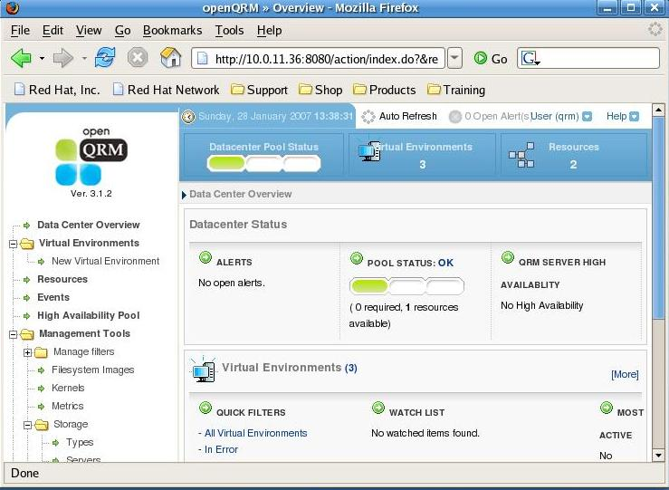
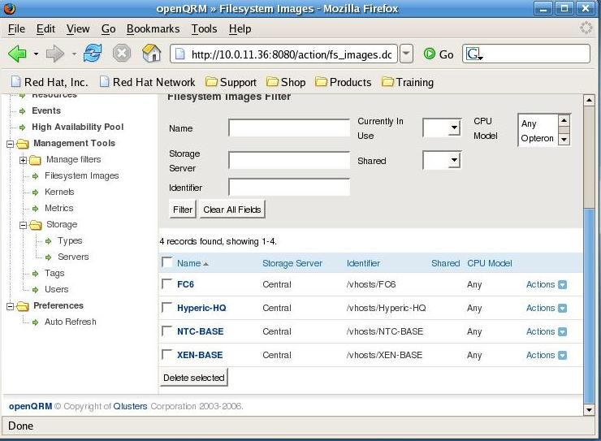
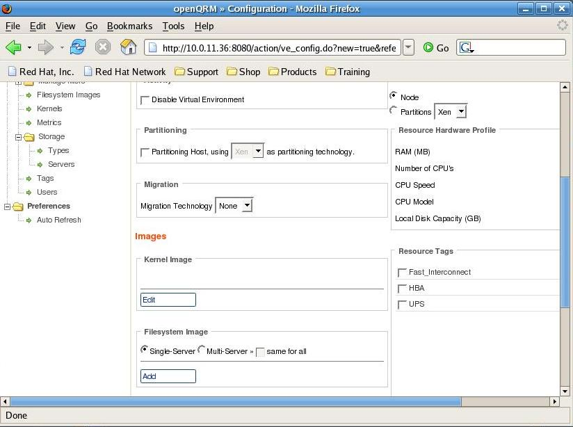
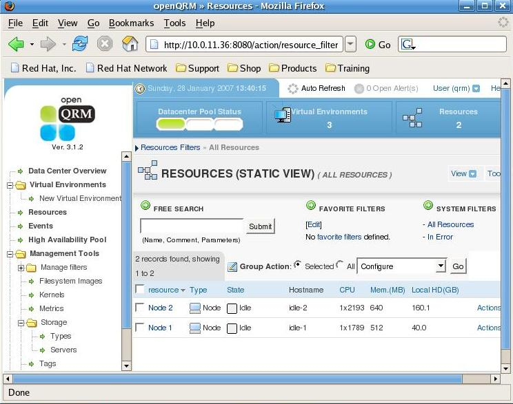
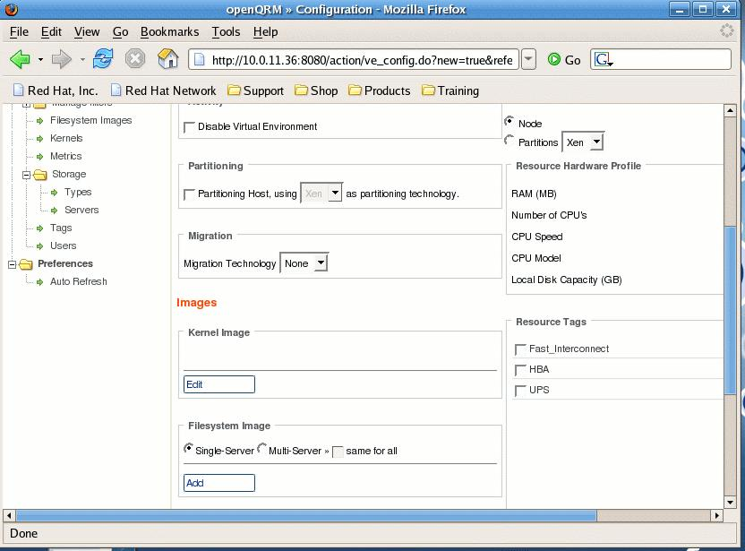
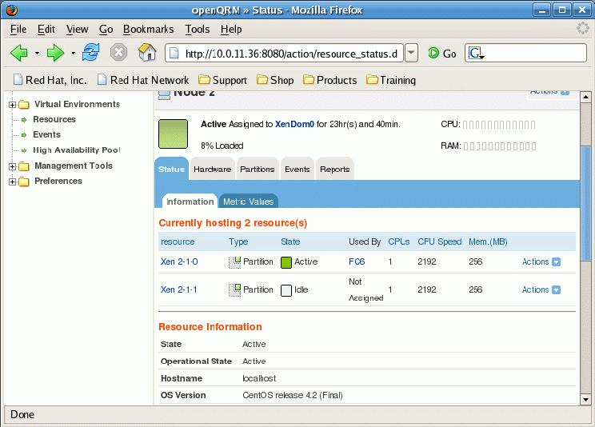

Intro
Every virtualisation technique has it's own management interface, it's own GUI, it's own API. But there is only one tool that manages multiple virtualisation techniques at once. And it isn't even a Virtualisation tool, it's openQRM.
openQRM is an open source systems management platform that automates enterprise data centers and keeps them running.
openQRM gives you a framework from which you can deploy and boot different images on available (idle) resources. This way you can use the resources in your datacenter to the max. openQRM has a flexible plugin structure that enables integration with different other tools such as Nagios, HypericHQ, Webmin and many others. One of the nicest features of openQRM is partitioning. It is this partitioning technique that allows you to deploy multiple virtual machine instances in a farm, as if they just were different idle resources. Today, openQRM has support for different virtualisation techniques such as Xen and VMWare, but other technologies are supported from the openQRM community.
openQRM
Imagine managing Virtual machines and Physical machines from the same console, imagine creating pools of machines booted from identical images one taking over from the other when needed. Imagine booting virtual nodes from the same remote iSCSI disk as physical nodes.. Imagine those tools to be integrated with Nagios and Webmin.
Remember the nightmare you ran into when having to build new kernels and deploying them , or redeploying an image on different hardware. But now you can stop worrying :) stop imagining. Let's have a look at openQRM :)
openQRM, just aged 3.1, is an open source cluster resource management platform for physical and virtual data centers. Based on a former proprietary project that now has gone open source, openQRM has succeeded in integrating different leading open source projects into one console. With a pluggable architecture there is more to come. I write cluster resource management, but actually I mean a platform to manage your infrastructure.
Whether you are deploying Xen, Qemu , VMWare or just physical machines, openQRM can help you in managing your environment.
This article will guide you through the different key concepts of openQRM, and it will explain how apart from managing data centers it will ease the life of the development community to provide you with an easy to manage test platform environment.
OpenQRM General Concepts
Concepts
OpenQRM consists mainly of 4 components that are required to get an environment up and running.
A storage server, which can export volumes to your clients such as iSCSI or NFS volumes
A filesystem image , captured by openQRM , created, or generated yourself.
A Boot Image, from which the node boots, consisting of a kernel it's initrd and a small filesystem containing openQRM tools.
A Virtual environment, which is actually the combination of a bootimage and a filesystem
With openQRM you can build a booting environment that works for all your hardware independently of the image that will actually be booted, whether it's an old or a new platform, you don't need to take care of the hardware dependancies.
Unless you are using the Local Deploy plugin deploying a node does not mean that you are installing an OS on a server, It just means you are booting a platform and putting it in production. Within this kind of deployment you still have different types You have
Single deployment , 1 image running on 1 machine
Shared deployment : deploy the same filesystem on multiple machines, define pools where you need a number of resources per type filesystem and load balance between those instances. (add openMosix or some other SSI technology for your own pleasure)
Partitioned deployment: Rather than using full machines you can partition a machine with different virtual machines. This can be done with the same filesystem images. . Today plugins for Xen, plugins for VMWare, Linux VServer and Qemu are about to be integrated into openQRM.
Once you boot your nodes from the network, they arrive in an idle state. When you tell openQRM you need a new virtual platform one of the idle nodes gets promoted to a production node based on existing resources and matching requirements from the meta data in a Virtual Environment.
Obviously you need to have a working PXE and Dhcpd environment, but there are openQRM packages available that do that for you, so you don't need to worry about setting it up yourself, although you are free to use an existing platform.
Installing openQRM
OpenQRM comes to you in a bunch of prebuild RPM's or you can choose to download the source code.. Off course the RPM's are the quickest way to get up and running from a minimal Centos 4.2 with already MySQL installed on it .. Note that you need a working MySQL database and plenty of memory to get started as openQRM is starting it's own Java application server and will create some tables in a MySQL database .
OPENQRM:/ # rpm -qa | grep qrm openqrm-plugin-tftpd-3.1.2_1-0.EL4 openqrm-core-base-3.1.2-2.EL4 openqrm-plugin-dhcpd-3.1.2_1-0.EL4 openqrm-plugin-xen-3.1.2_0-3.FC4 |
OPENQRM:/opt/qrm # ./qrm-installer |
Would it surprise you if I told you that the majority of logfiles openQRM creates can be found in /var/log/qrm ? Typical things that go wrong are running out of memory or database connections that fail. But apart from these problems, no significant issues have been reported.
So we are almost ready with our openQRM installation, Let's point our browser now to http://yourserver:8080/ and see what 's happening there :) (the default username is qrm and so is the password.) If the installation was successful you now have a working openQRM setup with no resources, no virtual environments but at least 1 boot image.

Using openQRM
Adding a storage section
For this an example we'll document how to create an NFS storage section, for production environments I recommend you to look at iSCSI.
When you log on to your openQRM web dashboard, you'll see a menu on the left with an entry called Management Tools, from there choose Storage/Server and click on the right top Tools pull-down menu where you choose Add New Storage Server. Give your storage server a name, choose NFS and give it an IP address, then press Save.
Alternatively from the command line you just run.
./qrm-cli -u qrm -p qrm storage add -n NFS -t NFS -i 10.0.11.35 -c "QRMSRC" |
Creating Filesystem Images
Filesystem images come in different tastes, You can create them in different ways. You can create them either manually or automatically. For the manual creation you can use either the command line or the webinterface. For the commandline based approache you need an nfs server that is ready and the client will then log on to a remote machine via ssh (root) and then rsync the image to the nfs server.
OPENQRM:/opt/qrm/bin # ./qrm-filesystem-image create -u qrm -p qrm -s FC6INSTAL -l 10.0.11.172:/ -t /vhosts/FC6INSTALL The next step will create a Qrm-image from the system 10.0.11.172 (you will be prompted for the password of root@10.0.11.172) Press ENTER to continue Creating filesystem-image FC6INSTAL from 10.0.11.172 Transferring the image content from 10.0.11.172:/// (this procedure may take time) root@10.0.11.172's password: |
For automatical filesystem image creation you use the webinterface and you create a yet non existing image which has already an NFS export ready, when you initially boot that server (after creating a virtual environment mapped to that image) the image will automatically be created
Or you can also work with images you download from sites such as Jailtime.org.

On creating Virtual environments
A virtual environment can be created from the webinterface.
Once again from the left hand menu select the Virtual Environments / New Virtual Environment option, for now don't use partitioning yet, choose a kernel from the list and choose a filesystem. Then save your new environment. From there you will see the freshly created virtual environment show up in list of Virtual Environments ready to be started.

Getting ready to boot
The concept of openQRM is that your system images over the network. This means you need other plugins such as the dhcpd and tftp plugin in our case, or you can use dhcpd and tftp server already existing on your infrastructure. You can still configure and install them via ./qrm-configurator in /opt/qrm By selecting the plugin option there you can enable plugins. So to start you need to enable dhcpd and tftpd , An example dhcpd.conf can be found in the plugin.
So now that you have openQRM up and running, you have configured the dhcpd server and you have an operational tftpserver you still need to define a boot image.
A virtual environment is the combination of a bootimage and a filesystem image, you can mix and match, hence making images boot on different platforms , physical or virtual. A default boot image is being built when you install openQRM , but you can build other boot images from kernels you prefer. The tftpboot expects a file called vmlinuz-qrm in /opt/qrm/tftpboot/boot, if that doesn't exist yet you can regenerate it by running qrm-admin init-system from /opt/qrm/sbin
./qrm-boot-image create -u qrm -p qrm -o -k 2.6.9-22.EL -b qrm -y qrm Creating boot-image qrm from kernel version 2.6.9-22.EL Copying the kernel files Creating the initrd file Successfully created boot-image qrm |
So the client comes up with an interface eth0:qrm with the ip address it got from dhcp.
Then it sends a starting_signal message to my QRM ip (eth0:QRM) and it gets information on itself from the QRM server.
It prepares /opt/qrm , runs qrm services and runs node-agents. In order to end with finishing its idle node configuration .
Time to take a look at the webconsole then. Indeed .. There is now one resource available.

The next step now is to boot an actual "Virtual Environment" As you already created a Virtual Environment via the webinterface, now is the time to pull down the actions menu on the virtual environment you want to boot and start your virtual environment.
As you see the idle node rebooting and coming up again with it's intended image you now have a working openQRM environment ready to play with. Go ahead and define more virtual environments, add more nodes and shutdown nodes while new nodes take over the services of the virtual environment
Enter Xen
Xen has become one of the most popular virtualisation platforms over the last 2 years, although it's not such a young project, it is now rapidly gaining acceptance in the corporate world as a valuable alternative to VMWare.
Xen is a virtual machine monitor for x86 that supports execution of multiple guest operating systems with unprecedented levels of performance and resource isolation. Xen is Open Source software, released under the terms of the GNU General Public License.
Adding Xen to your machine changes it from an ordinary x86 alike machine to a totally new platform. It's not an x86 anymore, it's a Xen architecture now. All the operating systems that you want to run on your machine won't work anymore if they only know about x86, they need to know about Xen. Off course the Xen and x86 architecture are really similar , so for the end user and the applications that run on a platform ported to Xen there is almost no difference.
When Xen is activated it will also need to boot it's first virtual machine, called Domain0, Domain0 has more privileges than the other virtual machines and typically is only used for managing the other (less privileged) virtual machines. Domain0 is also responsible for managing the hardware. Porting a platform to Xen changes almost nothing to the drivers which means that most drivers supported in traditional Linux kernels are also supported in Xen.
Within Domain0 the "xend" daemon handles the management of the virtual machines and can be controlled via the "xm" command line utility
From there we can start to create other Virtual Machines aka Domains.
All of the Xen configuration details live in the /etc/xen/ directory. For eachvirtual machine a config file (in our case the hostname) is created that contains the specific configuration regarding the setup of a virtual machine.
An example config file looks like this:
Subian-Host:/etc/xen # cat Subian-1A
kernel = "/boot/vmlinuz-2.4.29-xen0"
memory = 64
name = "Subian-1A"
nics = 2
vif = ['ip = "172.16.33.160", bridge=xen-br0',
'ip = " 172.16.41.160", bridge=xen-br1']
disk = ['phy:vm_volumes/root-Subian-1A,sda1,w'
,'phy:vm_volumes/tmp-Subian-1A,sda3,w'
,'phy:vm_volumes/var-Subian-1A,sda4,w'
,'phy:vm_volumes/usrlocal-Subian-1A,sda5,w'
,'phy:vm_volumes/swap-Subian-1A,sda2,w'
]
root = "/dev/sda1 rw" |
Booting such a virtual machine is as easy as running "xm create -c $filename" which will also directly connect you to the Virtual Machine's console where you can follow the output of the boot process.
There are 2 init scripts that are important and should be started at boot time.
/etc/init.d/xend /etc/init.d/xendomains |
A typical Xen guest installation is done by copying an existing installation into a chrooted environment. One doesn't boot from an install CD ,at least not with the typical paravirtualisation approach, when installing a Virtual machine in Xen as they are all built for an X86 based platforms and not for Xen. (Note that with the introduction of the VT and it's support by Xen typical ISO install methods are gaining popularity again.
Now as openQRM is already capable of booting Images of existing environments over NFS, why wouldn't it be capable of booting such an images in a virtual machine ? The key here concept is that you need to be able to make reproducable images.
Managing Xen
With lots of commercial and open source tools popping up to manage Xen instances "xm" still tends to be the main tool that people use to start, stop , reboot machines etc.
Fedora , and Redhat provide you with virt-manager ,which is a desktop application for managing virtual machines. It presents a summary view of running domains and their live performance & resource utilization statistics. A detailed view presents graphs showing performance & utilization over time.
ConVirt is an active, open source project formerly known as Xenman XenMan is an intuitive, graphical management tool aimed at operational lifecycle management for the Xen virtualisation platform. XenMan is built on the firm design philosophy that ease-of-use and sophistication can, and should, co-exist in a single management tool. With XenMan's secure, multi-node administration, performance management and provisioning capabilities, administrators can safely manage their entire environment from a single, centralized console. Most common administrative tasks like starting, stopping, monitoring and provisioning virtual machines (Guest OS's) typically involve just a few mouse clicks with XenMan;
Enomalism is a management console for the Xen Hypervisor. It is a web application developed using the python programming language and the TurboGears MVC framework. It was developed by Enomaly, a consultancy firm based in Toronto, Canada. Enomaly initially was a bit to complex to get started, but today it is evolving into an interesting tool for Virtual Machine Management.
Last but not least there is Xen-Enterprise in all its flavors, the commercial offering by XenSource, the authors of Xen. Xen-Enterprise claims to be "10 minutes to Xen", or even less , Xen-Enterprise today ships in different flavors with only a limited featureset of the actual Xen product , the core features are there, but the user interface doesn't provide access to all of them. They have based the deployment of a limited set of platforms (RHEL/ Debian and Windows) on existing templates they ship. Any platform beyond their templates is a bit more difficult to be deployed. Xen Enterprise is mainly targeting the Microsoft market for people who want Bare metal virtualisation. Yes you can manage multiple Xen machines with them but limited to the platforms they have chosen for you.
None of these tools actually thinks about the infrastructure as a big part but as instances within that infrastructure that happen to be virtual machines, where your virtual machine console becomes just another tool next to your database management tool. So your virtual machine management console becomes yet another tool you have to open in the morning before you can get started with your work.
openQRM and Xen
Now that we know what Xen and openQRM are all about, let's have a look at integrating them both. The actual openQRM Xen plugin is based on the VMWare plugin.
As soon as you have installed the openQRM-Xen plugin rpm (openqrm-plugin-xen-3.1.2_0-3.FC4) you can run the installer
cd /opt/qrm/ ./qrm-installer -i -m xen --defaults |
You might have noticed the partitioning feature in the configuration menu of a Virtual Environment, now that you have the Xen plugin installed this will have a pull down option called Xen. So let's create a new Virtual Environment with this option enabled. After installing the Xen plugin you will have more options for the kernel to choose, a Xen enabled kernel Xen-Hypervisor is now also at your disposal. Select this kernel and select a filesystem of your choice.

Upon starting your freshly created Virtual Environment , an idle node will boot into the Xen-Hypervisor kernel and Filesystem Image you created and will start xend . When you log on to the node you should see that it indeed is running Xen
uname -a Linux localhost 2.6.16.29-xen #6 SMP Wed Jan 24 08:50:25 EST 2007 i686 i686 i386 GNU/Linux |

Upon starting one or more nodes you'll see a dhcp request on your dhcpdserver and you can follow the booting of an idle node via xm console on the xen machine (use xm list to see which id you need to connect to). In case anything goes wrong the best place to look now is both in the logfile of your dhcp server and the syslog on the xenhost. If your dhcpdserver is not configured to answer to non pxe boot requests this might be a reason why booting a virtual machine fails. Assuming you get an IP for your next idle node you will see a new idle resource pop up in your openQRM dashboard for each virtual machine you started.
Now if you think about it.. what would your next step be ? Indeed create a virtual environment that uses a Xen kernel and has a partition as a minimal resource. You can configure the environment on the right hand side of the Virtual Environment config page. Once you saved this new configuration you can start it and you should see one of your idle virtual machine instances being rebooted and your last created virtual environment should boot.
Off course apart from stopping and starting virtual machines , you can do much more from the Actions|Xen-Config option on the Resources view. You can pause and unpause partitions, You can modify the ram configuration, you can add virtual CPU's and you can modify the CPU Assignment, and last but not least you can do migrations of partitions.

Conclusions
In a nutshell I have shown shortly what openQRM is all about, and how you can get started. More info can be found on the openQRM website openqrm.sf.net.
We haven't even touched the more advanced openQRM features such as failover , local-deploy and how their plugin system eases you to add more tools you already know in the same dashboard where examples such as Webmin and Nagios are already available , or even the other offerings such as High Availability and Workload migration that Qlusters offers.
But the next time your development team wants to test something risky on their platform just boot them an idle node from their Virtual Environment , have them play around, test , screw up and don't worry , because it will only take you minutes to give them back what they started with, and after they are finished, you can have your machines back ready to be used for another service.
openQRM is heading the good direction to manage a reproducible Infrastructure from an end user perspective.
As openQRM has support for non Linux platforms, even integration with Full virtualisation is among the possibilities for future versions.